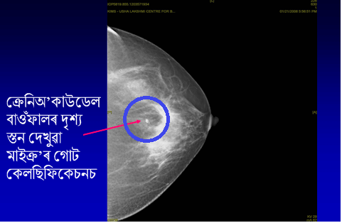
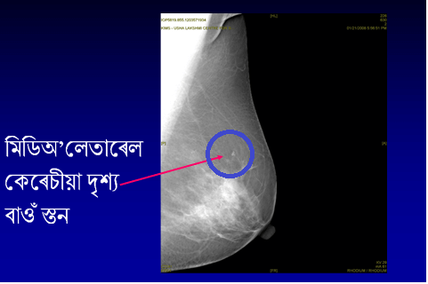

স্তন

স্তন
স্তনবৃন্ত

মার্টিনা নাভ্রাতিলোভা, ক্রীড়াজগতৰ এগৰাকী কিংবদন্তি, নবাৰ উইম্বলডন চিংগল্স চেম্পিয়ন, ডাক্টাল কার্চিনোমা ইন চিটু (DCIS), নামৰ এবিধ প্রাথমিক পর্যায়ৰ স্তনৰ কর্কট ৰোগৰ দ্বাৰা আক্রান্ত হয়। তেওঁৰ বয়স তেতিয়া 53 বছৰ হৈছিল আৰু তেওঁ চাৰি বছৰৰ পৰা বার্ষিক স্ক্রীনিং মেম'গ্রাম এৰাই চলি আহিছিল। যদিও 40 বছৰ বয়সৰ পৰা বার্ষিক স্ক্রীনিং মেম'গ্রাম কৰোৱাবলৈ পৰামর্শ দিয়া হৈছিল, তেওঁ স্বীকাৰ কৰিছে যে তেওঁৰ বার্ষিক চেকআপৰ ক্ষেত্রত তেওঁৰ নিৰোগী জীবনশৈলী আৰু সামাজিক মর্যাদাই কিছু জটিলতা সৃষ্টি কৰিছিল।
"মই চাৰি বছৰ মেম'গ্রাম কৰোৱা নাই," তেওঁ এটা সাক্ষাৎকাৰত কয়। সকলো ব্যস্ত, কিন্তু অজুহাত নেদেখুৱাব। মই ব্যায়ামৰ দ্বাৰা সুস্থ সবল হৈ থাকো, আৰু ভালকৈ খাও আৰু মোৰ এই ৰোগটো হ’ল! আৰু এটা বছৰ পাৰ হোৱা হ’লে মই বৰ ডাঙৰ বিপদত পৰিলেহেতেন।" সৌভাগ্যক্রমে কর্কট ৰোগ প্রাথমিক পর্যায়তে চিনাক্ত কৰা হৈছিল। তেওঁ ইতিমধ্যে এটা বহল স্থানীয় ছেদন (lumpectomy) কৰোৱাইছে আৰু 2010 চনৰ মে মাহত ৰেডিয়েচন থেৰাপী সম্পূৰ্ন কৰিলে।
শ্বেৰিল ক্রো, এজন সুপৰিচিত গায়ক ও নবাৰ গ্রামি পুৰস্কাৰ বিজয়ী আৰু ক্রিস্টিন এপলগেট, অন্য এক সুপৰিচিত হলিউড অভিনেতাৰ শৰীৰত স্ক্রীনিং মেম'গ্রাম কাৰণে আগতীয়া অবোধ্য স্তন কর্কট ৰোগ ধৰা পৰে।
DCIS কি?
স্তনৰ কোষকলাসমূহ ডাক্ট, লবিউলৰ আৰু চর্বিযুক্ত কোষকলাৰে দ্বাৰা গঠিত৷ ডাক্টাল কার্চিনোমা ইন চিটু (DCIS) হৈছে স্তনৰ কর্কট ৰোগৰ এটা প্রাথমিক ৰূপ য’ত কর্কট ৰোগৰ কোষ ডাক্টৰ (যিয়ে গাখীৰ স্তনবৃন্তলৈ বহন কৰে) ভিতৰত থাকে। এইটো হৈছে এইটো হৈছে এক প্রাক কর্কট ৰোগ অৱস্থা য’ত কর্কট ৰোগৰ কোষবোৰ স্বাভাৱিক পার্শ্ববর্তী স্তন কোষকলাৰ বাহিৰলৈ বিয়পি পৰাৰ ক্ষমতা লাভ নকৰে।
DCIS কিমান সচৰাচৰতে হোৱা দেখা যায়?
আমেৰিকান কর্কট ৰোগ চচাইটিৰ মতে প্রতি বছৰে মার্কিন যুক্তৰাষ্ট্রত প্রায় 60000 টা DCIS-ৰ ঘটনা ধৰা পৰে (প্রতি বছৰ ধৰা পৰা স্তনৰ কর্কট ৰোগৰ প্রতি 5 টাৰ 1 টা)। ভাৰতত ইণ্ডিয়ান কাউন্সিল অব মেডিকেল ৰিচার্চ (ICMR)-ৰ অনুযায়ী, প্রতি বছৰে প্রায় 150, 000 টা স্তন কর্কট ৰোগৰ ঘটনা ধৰা পৰে। যিকি নহওক, DCIS প্রকোপৰ কোন সুনির্দিষ্ট পৰিসংখ্যা নাই। সচেতনাৰ অভাব আৰু সংগঠিত স্ক্রীনিং কাৰ্যসূচীৰ অনুপস্থিতিৰ কাৰণে, আমাৰ দেশত 60%-তকৈ অধিক সংখ্যক স্তনৰ কর্কট ৰোগ উন্নত পর্যায়ত আছে, আৰু অধিকাংশ ৰোগী ৰোগ ধৰা পৰাৰ এবছৰৰ ভিতৰতে মৃত্যু হয়। ভাৰতত প্রতি দশ মিনিটত এগৰাকী মহিলা স্তনৰ কর্কট ৰোগত মৃত্যু হয়।
DCIS কেনেদৰে প্রকাশ হয়?
সাধাৰণতে DCIS-এ কোনো লক্ষণ নেদেখুৱাই। DCIS গৰিষ্ঠাংশ (80% ৰ অধিক) মেম’গ্রাফি স্ক্রীনিঙত চিনাক্ত কৰা হয়। DCIS স্তনবৃন্তৰ পৰা নির্গত তেজ মিহলি হৈ থকা তৰল পদার্থৰ দ্বাৰা, স্তনবৃন্তৰ চাৰিওফালে হোৱা ফোঁহা (পাজেট ৰোগ বুলিও কোৱা হয়) আৰু অতি বিৰল ভাবে স্তনত হোৱা কোনো লদাৰ দ্বাৰা ধৰা পেলাব পৰা যাব পাৰে।
DCIS-ক কেনেকৈ ধৰা পেলোৱা হ্য়?
DCIS-ক নিয়মিত ব্রেস্ট স্ক্রীনিং মূল্যায়নত চিনাক্ত কৰা হয়। মূল্যায়নত কোনো বিশেষজ্ঞৰ দ্বাৰা নিদানিক স্তন পৰীক্ষা কৰা হয়, এই মূল্যায়নত স্তন ইমেজিং (দুয়োটা স্তনৰ আল্ট্রাচাউণ্ড আৰু মেম'গ্রাম) আৰু এটা নীডল ক'ৰ বায়পচি (ট্রিপল এচেচমেন্ট) অন্তর্ভুক্ত কৰা হৈছে।

যিহেতু DCIS খুব বিৰল ভাবেহে কোনো লদাৰ দ্বাৰা ধৰা পৰে, সেয়েহে নিদানিক স্তন পৰীক্ষা সাধাৰণতে ফলপ্ৰসূ নহয়। মেম'গ্রামত, যাক স্তন স্ক্রীনিংৰ গোল্ড ষ্টেণ্ডার্ড বুলি কোৱা হয়, সাধাৰণতে কোনো এটা ক্লাস্টাৰ অস্বাভাৱিক ৰূপৰ (pleomorphic) মাইক্ৰকেলচিফিকেশন - কেলচিয়ামৰ ক্ষুদ্র বিন্দু যিবোৰক মেম'গ্রামত বগা বিন্দু ৰূপে প্রদর্শিত হয়। কিন্তু মনত ৰখা দৰকাৰ যে, আটাইবোৰ মাইক্ৰকেলচিফিকেশন কর্কট ৰোগ নহয়। DCIS-ক চিনাক্ত কৰিবলৈ মাল্টিডিচিপ্লিনেৰি দলৰ দক্ষতা আৰু অধ্যৱসায়ৰ প্রয়োজন।



অৱশেষত, ৰোগ নির্ণয় কৰিবলৈ, কোষকলাৰ টুকুৰা এটা ক'ৰ নীডল বায়পচিৰ দ্বাৰা আঁতৰাই অনা হয় যাক স্থানীয় এনেস্থেচিয়াৰ অধীনত (মেম'গ্রাম সাহায্যৰে) ষ্টেৰিঅ'ষ্টেটিক(tereotactic) নিৰ্দেশনাত সম্পন্ন কৰা হয়। আনবিধ নীডল বায়পচি, ফাইন নীডল এস্পিৰেচন বায়োপ্সি (FNAC) , যাক সাধাৰণতে স্পর্শকাতৰ স্তনৰ লদাৰ কাৰণে ব্যবহৃত হয়, ভুল ফলাফল দিব পাৰে আৰু DCIS আৰু আক্রমণকাৰী কর্কট ৰোগৰ (স্তন কোষকলাত বিয়পি পৰা কর্কট ৰোগ) মাজৰ পার্থক্য ধৰা পেলাব নোৱাৰিব। নীডল ক’ৰ বায়পচিয়ে খুব নির্ভুল ফলাফল দিয়ে।

কিছু ক্ষেত্রত, যেতিয়া মাইক্ৰ'কেলচিফিকেচন (microcalcifications) ক্লাস্টাৰবোৰ খুব সৰু আৰু কমকৈ থাকে আৰু নীডল ক’ৰ বায়পচিৰ দ্বাৰা ৰোগ ধৰা নপৰে তেতিয়া মাইক্ৰ'কেলচিফিকেচন (microcalcifications) স্থানীয়কৰণ কৰিবলৈ সাধাৰণ এনেস্থেচিয়াৰ অধীনত এক সূক্ষ্ম নির্দেশিকা তাঁৰ ব্যৱহাৰ কৰি ৰোগ নির্ণয় সম্ভৱপৰ হৈ উঠে
DCIS-ৰ গ্ৰেড (মাত্ৰা) কেনেদৰে দিয়া হয় আৰু ইয়াৰ তাৎপৰ্য কি?
মাইক্রোস্কোপৰ তলত কোষবোৰৰ চেহাৰা আৰু কিমান দ্রুতভাবে এইবোৰ বিভাজিত হয় তাৰ ওপৰত নির্ভৰ কৰি DCIS-ৰ গ্রেড দিয়া হয়। ইয়াক উচ্চ, মধ্যম গ্রেড আৰু কম গ্রেডৰ DCIS বুলি ধার্য কৰা যাব পাৰে। যদি DCIS-ৰ চিকিৎসা কৰা নহয়, তেতিয়া কর্কট ৰোগৰ কোষবোৰে অৱশেষত ভিতৰৰ ডাক্টৰ পৰা পার্শ্বৱর্তী স্তন কোষকলাবোৰলৈ বিয়পি পৰাৰ ক্ষমতা আহৰণ কৰিব পাৰে। ইয়াক আক্রমণকাৰী স্তনৰ কর্কট ৰোগ ৰূপে জনা যায়। কোনো উচ্চ গ্রেডৰ DCIS-তকৈ কম গ্রেড DCIS কোনো আক্রমণকাৰী স্তনৰ কৰ্কট ৰোগলৈ পৰিণত হোৱাৰ সম্ভাৱনা কম।
DCIS-ক কেনেদৰে চিকিৎসা কৰা হয়?
চিকিৎসাৰ লক্ষ্য হৈছে আক্রমণকাৰী স্তনৰ কর্কট ৰোগৰ বিকাশ প্রতিৰোধ কৰিবলৈ স্তনৰ ভিতৰৰ সকলোবোৰ DCIS অপসাৰণ কৰা। ডাক্টৰ ভিতৰত DCIS কিমান বিয়পি পৰিছে আৰু DCIS ৰ গ্রেড কিমান এই কাৰকবোৰৰ ওপৰত চিকিৎসা নির্ভৰ কৰে।
A. অস্ত্রোপচাৰ 1. স্তন সংৰক্ষণকাৰী অস্ত্রোপচাৰস্তনৰ অস্ত্রোপচাৰ হৈছে DCIS-ৰ কাৰণে সৰ্বসন্মত ভাবে অৱলম্বন কৰা প্ৰাৰম্ভিক চিকিৎসা। যদি DCIS-ক স্থানীয়কৰণ আৰু স্তনৰ এটা অঞ্চলতে সীমাবদ্ধ কৰা হয়, তেনেহলে স্তন সংৰক্ষণ অস্ত্রোপচাৰ সম্পাদন কৰিব পৰা যাব। যিহেতু কর্কট ৰোগ ৰোগী বা ডাক্তাৰৰ দ্বাৰা অনুভব কৰা নাযায়, সেই কাৰণে স্তনৰ অস্বাভাৱিক স্থানবোৰ ধৰা পেলাবলৈ স্থানীয় এনেস্থেচিয়াৰ অধীনত এটা সূক্ষ্ম নির্দেশিকা স্তনৰ ভিতৰলৈ ভৰাই দিয়া হয়। এইটোৱে এক নির্দেশিকা ৰূপে কাম কৰে আৰু তেতিয়া শৈল্য চিকিৎসকে পার্শ্বৱর্তী অঞ্চলৰ স্তনৰ স্বাভাৱিক নিৰোগী কোষকলা সৈতে DCIS-ৰ অঞ্চলটো আঁতৰাই দিয়ে।
স্তন সংৰক্ষণকাৰী অস্ত্ৰোপচাৰ -
বহল স্থানীয় ছেদন


যদি DCIS-এ স্তনৰ এটা বৃহৎ অঞ্চল প্রভাৱিত কৰে বা স্তন সংৰক্ষণ অস্ত্রোপচাৰ ব্যৱহাৰ কৰি DCIS-ৰ চাৰিওফালে স্বাভাৱিক কোষকলাৰ স্পষ্ট অঞ্চল এটা পোৱা সম্ভব নহয়, বা স্তনত DCIS-ৰ একাধিক অঞ্চল বিদ্যমান তেতিয়া মাষ্টেকটমী অস্ত্ৰোপচাৰক চিকিৎসাৰ এক বিকল্প হিচাবে গ্ৰহণ কৰা হয়। যদি মাষ্টেকটমী কৰোৱাবলৈ পৰামর্শ দিয়া হয়, তেনেহলে ৰোগীক প্রাথমিক অস্ত্রোপচাৰৰ লগতে স্তন পুনৰ্নিৰ্মাণ অস্ত্রোপচাৰ কৰোৱাবলৈ পৰামর্শ দিয়া উচিত যাতে স্তন অপসাৰণৰ সৈতে সম্পৰ্কিত মানসিক আৰু আৱেগিক কষ্ট হ্রাস কৰিব পৰা যায়। সাধাৰণতে, কাষলতিৰ লিম্ফ গ্লেণ্ডবোৰক আঁতৰোৱাৰ প্রয়োজন নহয়, কাৰণ ডাক্টৰ পৰা স্তন কোষকলালৈ DCIS বিয়পি নপৰে।
স্তনৰ অপসাৰণ -
মাষ্টেমটমী

সৌজন্য: ব্রেষ্ট কেঞ্চাৰ কেয়াৰ, ব্ৰিটেইন


অস্ত্রোপচাৰৰ পিছত অতিৰিক্ত চিকিৎসাৰ প্রয়োজন হয়। এই চিকিৎসাক সহযোগিতামূলক চিকিৎসা বুলি কোৱা হয় আৰু ইয়াত ৰেডিঅ'থেৰাপী আৰু হৰমোন থেৰাপী অন্তৰ্ভুক্ত।
ৰেডিঅ’থেৰাপীযদি স্তন সংৰক্ষণ অস্ত্রোপচাৰ সম্পন্ন কৰা হয়, তেনেহলে স্তনৰ অস্ত্রোপচাৰ কৰিবলৈ ছমাহ বাহ্যিক বীম ৰেডিঅ’থেৰাপী প্ৰদান কৰাটোৱেই হৈছে সাধাৰণ সহযোগিতামূলক চিকিৎসা। যদি ৰোগীৰ মাষ্টেকটমী কৰা হৈছে তেনেহলে, ৰেডিঅ’থেৰাপীৰ প্রয়োজন নহয়।
হৰমোন থেৰাপীযদি DCIS-ৰ প্রকাৰ (ইষ্ট্ৰ'জেন ৰিচেপটৰ ধনাত্মক) ইষ্ট্ৰ'জেন হৰমোন বিকাশিত হোৱাৰ ওপৰ নির্ভৰ কৰে, তেনেহলে হৰমোন থেৰাপী হিচাবে টেম'ক্সিফেন (Tamoxifen) প্রদান কৰা হয়। ই DCIS গ্রেডৰ দৰে আন কাৰকবোৰৰ ওপৰতো নির্ভৰ কৰিব।
কেম’থেৰাপীDCIS-ৰ চিকিৎসাৰ কাৰণে কেম'থেৰাপীৰ প্রয়োজন নহয়
DCIS জীৱনৰ কাৰণে ভাবুকি স্বৰূপ নেকি আৰু DCIS-ৰ পূৰ্ৱাভাস কি?
নহয়। যিহেতু কর্কট ৰোগ গাখীৰৰ ডাক্টবোৰ পাৰহৈ কোনো পার্শ্বৱর্তী স্তনৰ স্বাভাৱিক কোষকলাবোৰলৈ বিয়পি পৰা নাই, সেইকাৰণে DCIS জীবনৰ কাৰণে ভাবুকি স্বৰূপ নয়। DCIS-ৰ সৈতে মহিলাসকলৰ দীর্ঘম্যাদী জীয়াই থকাৰ হাৰ হৈছে অতি উত্তম, প্রায় 100% (98%- 99%) ।